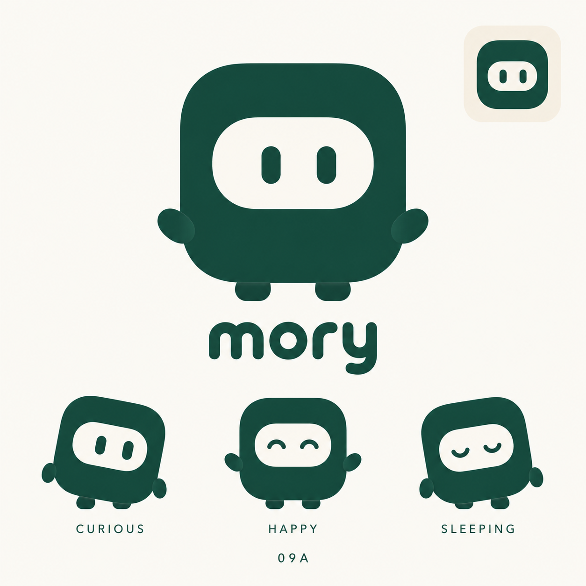
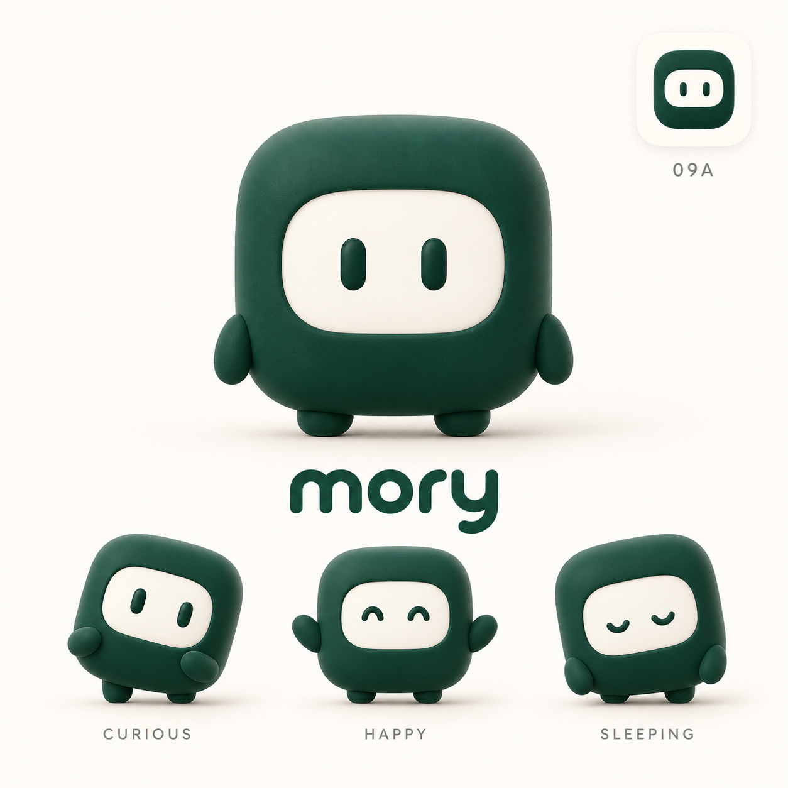

<!doctype html><html lang="zh-CN"><meta charset="utf-8"><meta name="viewport" content="width=device-width,initial-scale=1"><title>Mory · 09A 可爱 Bot</title><style>*{box-sizing:border-box}body{margin:0;background:#eeefe9;color:#123f34;font-family:Arial,'Microsoft Yahei',sans-serif}main{max-width:1600px;margin:auto;padding:40px 28px}small{letter-spacing:2px;color:#819080}h1{font-size:34px;font-weight:500;margin:18px 0}p{color:#768575;font-size:14px;line-height:1.8}.grid{display:grid;grid-template-columns:1fr 1fr;gap:24px;margin-top:28px}article{background:#faf9f5;border-radius:18px;overflow:hidden;border:1px solid #dce2d7}img{width:100%;display:block}footer{padding:20px 24px}footer b{font-size:16px;font-weight:500}footer p{margin-bottom:0}@media(max-width:800px){.grid{grid-template-columns:1fr}}</style><main><small>MORY / 09A / CUTE BOT</small><h1>规整的小方块，变成会陪伴的 Bot。</h1><p>两种表现：平面品牌角色与立体产品伙伴。保留圆角方形、横向面窗、短手短脚。当前为生成概念稿，比例仍需在矢量定稿时校准。</p><div class="grid"><article><a href="09a-flat-cute.png" target="_blank"></a><footer><b>A · 平面品牌版</b><p>适合 Logo、界面状态和轻量动画。</p></footer></article><article><a href="09a-3d-cute.png" target="_blank"></a><footer><b>B · 立体伙伴版</b><p>适合官网展示、欢迎页和角色宣传图。</p></footer></article></div></main></html>
